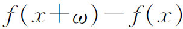
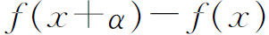
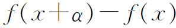
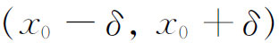
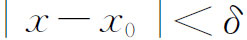
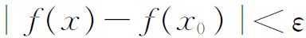
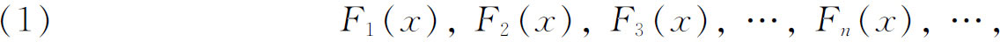
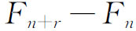

2．函数及其性质
18世纪的数学家大多相信一个函数必须处处都有相同的解析表达式。在18世纪的后半叶，很大程度上作为弦振动问题上争论的一个结果，欧拉和拉格朗日允许函数在不同的区域上具有不同的表达式，而且在那些有同一表达式的点上用连续这个词，而在那些改变了表达式形式的点上用不连续这个词（虽然在现代意义上讲整个函数可能都是连续的）。当欧拉、达朗贝尔和拉格朗日不得不重新考虑函数的概念时，他们既没有得到任何广泛被采用的定义，也没有解决什么样的函数可以用三角级数来表示的问题，但是多方面的逐渐发展以及函数的应用迫使数学家接受一个更广的概念。
在高斯的早期著作中函数指的是一个封闭的（有限解析的）表达式，而当他谈到超几何级数F（α，β，γ，x）作为α，β，γ和x的函数时，他用注解来确定它的意义说：“在这个范围内能认为它是一个函数。”拉格朗日在把幂级数看成函数时早就采用了一个更广的概念。在他的《解析力学》（Mécanique analytique，1811—1815）第二版中，他用函数一词来表示几乎是任何类型的对一个或多个变量的依赖关系。甚至在拉克鲁瓦1797年的《专著》中早就引入了一个更广的概念。他在引论中说：“每一个量，若其值依赖于一个或几个别的量，就称它为后者（这个或这些量）的函数，不管人们知不知道用何种必要的运算可以从后者得到前者。”作为一个例子，拉克鲁瓦把一个五阶方程的一个根作为该方程系数的函数。
傅里叶（Joseph Fourier）的工作甚至更广泛地展现了函数究竟是什么的问题。一方面他主张函数不必表示为任何解析表达式。他在他的《热的解析理论》（The Analytical Theory of Heat）(8)中说：“通常，函数f（x）表示相接的一组值或纵坐标，它们中的每一个都是任意的……我们不假定这些纵坐标服从一个共同的规律；它们以任何方式一个挨着一个……”实际上，他只讨论了在任一有限区间上具有有限个间断点的函数。另一方面，在某种程度上傅里叶支持函数必须用一个解析表达式来表示的论点，即使这个表达式是一个傅里叶级数。无论如何，傅里叶的工作是动摇了18世纪的这样一个信念，即所有函数无论它们怎么坏总都是代数函数的推广。代数函数，甚至初等超越函数，都不再是函数的原型了。由于代数函数的性质不再能搬到一切函数上去，所以人们说的函数、连续、可微性、可积性以及其他性质的真实意义究竟是什么的问题就提出来了。
在许多人从事的分析的积极重建中，实数系被认为是当然没有问题的。没有人企图去分析实数系的结构或逻辑地建立实数系。显然数学家们认为就所讨论的问题而言，他们是立足于可靠的基础之上的。
柯西在他1821年的书中是从定义变量开始的。“人们把依次取许多互不相同的值的量叫做变量。”至于函数的概念，“当变量之间这样联系起来的时候，即给定了这些变量中一个的值，就可以决定所有其他变量的值的时候，人们通常想象这些量是用其中的一个来表达的，这时这个量就取名为自变量，而由这自变量表示的其他量就叫做这个自变量的函数。”柯西也清楚无穷级数是规定函数的一种方法，但是对函数来说不一定要有解析表达式。
在一篇关于傅里叶级数的论文《用正弦和余弦级数来表示完全任意的函数》（Über die Darstellung ganz willkürlicher Functionen durch Sinus-und Cosinusreihen）(9)（这篇文章我们以后还要谈到）中，狄利克雷给出了（单值）函数的定义，这个定义是现今最常用的，即如果对于给定区间上的每一个x的值有唯一的一个y的值同它对应，那么y就是x的一个函数。接下去他又说，至于在整个区间上y是否按照一种或多种规律依赖于x，或者y依赖于x是否可用数学运算来表达，那都是无关紧要的。事实上，在1829年(10)他给出了x的一个函数的例子，它对一切有理数取值c而对一切无理数取值d。
汉克尔指出，至少在19世纪的上半世纪，最好的教科书中在讲到函数概念是什么的时候是混乱的。一些书本质上按欧拉的意义定义函数；另一些书则要求y随x依某一规律而变化，但是又没说规律的含义是什么；有些书则采用了狄利克雷的定义；还有一些书则不给定义。但是由他们的定义推出的结论并非逻辑地蕴含在这些定义中。
连续和间断之间特有的区别逐渐显现出来了。对函数性质的仔细研究是由波尔查诺（1781—1848）开始的，他是波希米亚的一个神父、哲学家和数学家。波尔查诺做这一工作，是由于他试图为代数基本定理给出一个纯算术证明来替代高斯用几何思想的第一个证明（1799）。对于微积分的建立（除实数理论外），波尔查诺具有正确的概念，但他的工作有半个世纪未被注意。他不承认无穷小数和无穷大数的存在，而无穷小和无穷大正是18世纪的作者曾经用过的。在1817年的一本以Rein analytischer Beweis（纯粹分析的证明）开始的书名很长的一本书中（参看文献），波尔查诺给出了连续性的恰当定义，即若在区间内任一x处，只要ω（的绝对值）充分小，就能使差

（的绝对值）任意小，那么就说f（x）在该区间上连续。他证明了多项式是连续的。柯西也抓住了极限和连续性的概念。和波尔查诺一样，极限概念是基于纯算术的考虑。他在《教程》（1821）中说：“当一个变量逐次所取的值无限趋近一个定值，最终使变量的值和该定值之差要多小就多小，这个定值就叫做所有其他值的极限。例如，一个无理数就是那些在数值上愈来愈接近于它的不同分数的极限。”这个例子有点不恰当，因为许多人把这样的极限作为无理数的定义，而如果无理数事先不存在，那么极限就没有意义。柯西在1823年和1829年的著作中删去了这个例子。
柯西在其1821年著作的序言［《教程》第5页］中说，当说及函数的连续性时，必须说明无穷小量的主要性质。“当一个变量的数值这样地无限减小，使之收敛到极限0，那么人们就说这个变量成为无穷小。”柯西把这种变量叫做无穷小量。这样一来，柯西就澄清了莱布尼茨的无穷小概念而且把无穷小量从形而上学的束缚中解放出来。柯西继续说：“当变量的数值这样地无限增大，使该变量收敛到极限∞，那么该变量就成为无穷大。”但是∞不意味着是一个固定的量，而只是无限变大的某个量。
现在柯西准备给函数的连续性下定义了。在《教程》（pp．34-35）中他说：“设f（x）是变量x的一个函数，并设对介于给定两个限［界］之间的x的值，这个函数总取一个有限且唯一的值。如果从包含在这两个界之间的一个x值开始，给变量x以一个无穷小增量α，函数本身就将得到一个增量，即差

，这个差同时依赖于新变量α和原变量x的值。假定了这一点之后，如果对于每一个在这两个限中间的x的值，差
的数值随着α的无限减小而无限减小，那么就说，在变量x的两限之间，函数f（x）是变量的一个连续函数。换句话说，如果在这两限之间，变量的一个无穷小增量总产生函数自身的一个无穷小增量，那么函数f（x）在给定限之间对于x保持连续。“我们也说f（x）在变量x的一个确定值的邻域中是x的连续函数，只要这函数在x的这两个限之间是连续的，而不管界住自变量的值的这两个限是多么靠近。”然后柯西又说，如果函数在包含x0的任何区间上不连续，就说函数在x0处不连续。
柯西在他的《教程》中第37页断言，如果一个多变量函数分别对每个变量都是连续的，则它对于所有变量都连续。这是不正确的。
在整个19世纪，连续的概念是人们研讨的对象，因而数学家们对它更多地理解了，有时候产生使他们感到吃惊的结果。达布（Gaston Darboux）曾给出一个函数的例子，当从x＝a变到x＝b时，这个函数取遍两个给定值之间的一切中间值，但却不是连续的。这样，连续函数的一个基本性质是不足以确保函数连续性的(11)。
魏尔斯特拉斯在分析严密化方面的工作改进了波尔查诺、阿贝尔和柯西的工作。他也力求避免直观而把分析奠基在算术概念的基础上。但他是在1841年至1856年做中学教师时做这些工作的，因此直到1859年他在柏林大学任教之前，他的大部分工作没有为人们所知道。
魏尔斯特拉斯攻击“一个变量趋于一个极限”的说法，这种说法不幸地使人们想起时间和运动。他把一个变量简单地解释为一个字母，该字母代表它可以取值的集合中的任何一个数。这样运动就消除了。一个连续变量是这样一个变量，如果x0是该变量的值的集合中的任一值而δ是任意正数，则一定有变量的其他值在区间

中。为了消除波尔查诺和柯西在定义函数的连续性和极限中用到的短语“变为而且保持小于任意给定的量”的不明确性，魏尔斯特拉斯给出了现今所采用的定义：如果给定任何一个正数ε，都存在一个正数δ使得对于区间

内的所有的x都有
，则f（x）在x＝x0处连续。如果在上述说法中，用L代替f（x0），则说f（x）在x＝x0处有极限L。如果函数f（x）在区间内的每一点x处都连续，就说f（x）在x值的这个区间上连续。在连续性概念本身正被精细地研究着的那些年代里，为了严密地建立分析而进行艰难的尝试就要求人们证明许多原先已经被直观地接受了的有关连续函数的定理。波尔查诺在他1817年的出版物中，企图证明如果f（x）在x＝a处为负而在x＝b处为正，则f（x）在a和b之间有一个零点。他（对固定的x）考虑函数序列

而且引入了这样的定理：如果n充分大，可使差数

对于无论多大的r都小于任何给定的正数，则存在一个固定的量X，使得这个序列愈来愈靠近X，而且确实如人们所想要的那样靠近X。他对量X的确定是含糊的，因为他没有一个清楚的实数系的理论，尤其是不清楚作为实数系基础的无理数的理论。然而他已经有了我们现在叫做序列收敛的柯西条件的思想（见下面）。在证明的过程中，波尔查诺建立了有界实数集的最小上界的存在。他的确切的陈述是：如果性质M不能适用于变量x的所有的值，但对于所有小于某个u的值性质M成立，则总存在一个量U，它是所有这样的量u的最大值。这个引理的波尔查诺证明的实质，在于把有界区间分成两部分，而选取包含集合的无穷多个元素的那一部分。然后他重复这一手续，直到他得到给定实数集的最小上界才停止。魏尔斯特拉斯在19世纪60年代应用波尔查诺贡献的这一方法证明了现在冠以魏尔斯特拉斯-波尔查诺名字的定理。这个定理证实了对于任何有界无穷点集，存在一个点，使得该点的任何邻域内都有这无穷点集的点。
柯西（在他关于多项式的根的存在的证明之一中）已经不加证明地用过定义在闭区间上的连续函数存在最小值。魏尔斯特拉斯在他的柏林讲义中证明了对任何定义在有界闭区域的单变量或多变量的连续函数，存在函数的一个最大值和一个最小值。
在康托尔和魏尔斯特拉斯的思想的鼓舞下，海涅［（Heinrich）Eduard Heine］定义了单变量或多变量函数的一致连续性(12)，尔后又证明了在实数系的有界闭区间上的连续函数是一致连续的(13)。海涅的方法引进且利用了下述定理：设给定了一个闭区间［a，b］，以及位于［a，b］中的所有闭区间构成的一个可数无穷集合Δ，使得a≤x≤b中的每一点x至少是Δ中一个区间的内点。（当a是一个区间的左端点而b是另一个区间的右端点时，也把端点a和b看作是内点。）则由Δ中有限多个区间组成的一个集合具有同样的性质，即闭区间［a，b］的每个点至少是这个有限区间集合中的某一区间的一个内点（a和b可能是端点）。
波莱尔（Emile Borel，1871—1956），20世纪的第一流法国数学家之一，清楚地认识到能够选出有限个覆盖区间的重要性，且对原来的区间集合Δ是可数的情形首先把它叙述为一个独立的定理(14)。虽然许多德国和法国的数学家把这个定理叫做波莱尔定理，但由于海涅在关于一致连续的证明中利用了这个性质，所以这个定理也叫海涅-波莱尔定理。正如勒贝格所指出的，这个定理的功绩不在于它的证明（它的证明是不难的），而在于认识到这个定理的重要性，而且把它作为一个清楚的定理确切地陈述出来。对于任何维数的闭集合，这个定理都适用，而且现在它已成了集合论中的一个基本定理。
把海涅-波莱尔定理推广到可以从一个不可数无穷集合中选出覆盖区间的一个有限集合的情形，通常归功于勒贝格（Henri Lebesgue），他自称在1898年就已经知道了这个定理而且发表在他的《积分学教程》（Leçons sur l'intégration，1904）中。但是这个定理是由库辛（Pierre Cousin，1867—1933）在1895年首先发表的(15)。